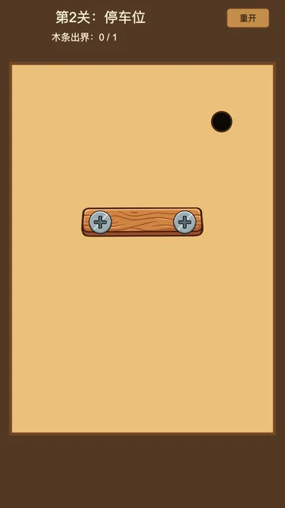
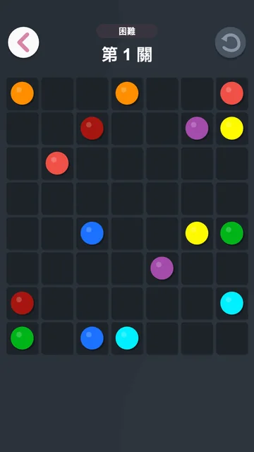
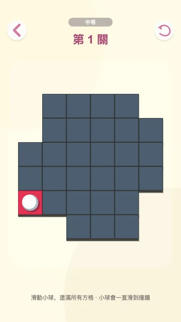

Human playground · canonical game mechanics
Play
LongPuzzleBench
These puzzles look simple. Solving them reliably can require dozens of dependent decisions. Pick one and feel the planning horizon yourself.
Zero install · no server round trips · mouse and touch

One legal move
Changes every future move
Re-plan from the new statePlayable demo levels
Six ways to lose the future.
Each family stresses a different kind of persistent state: access, identity, ordering, occupancy, coverage, or workspace.
What you are playing
The real browser environments, without the evaluator.
The playground loads the same checked-in Cocos runtime and level definitions used by LongPuzzleBench evaluation. It omits agent-only observation, scoring, time limits, and private diagnostics. This curated human demo is not the full 114-level evaluation set.
Read the evaluation protocol